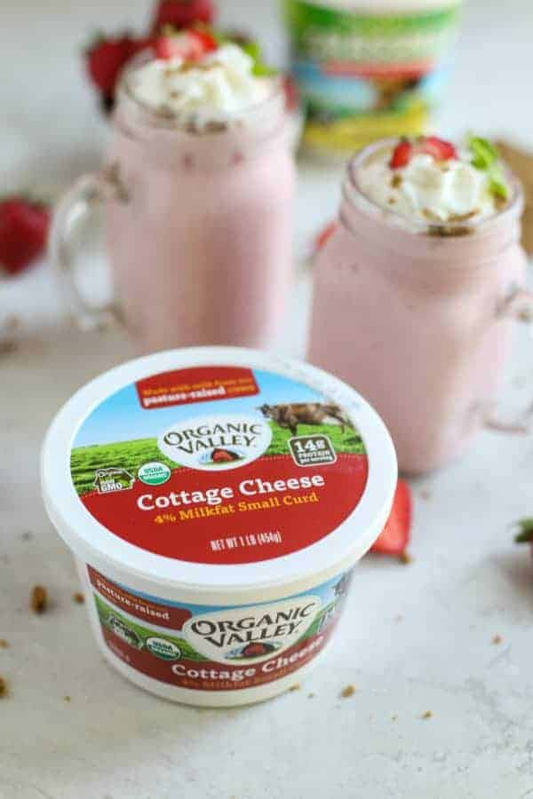
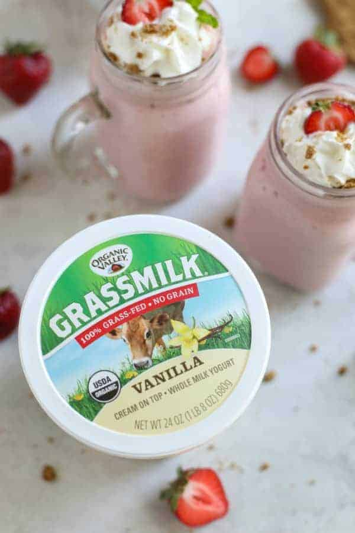
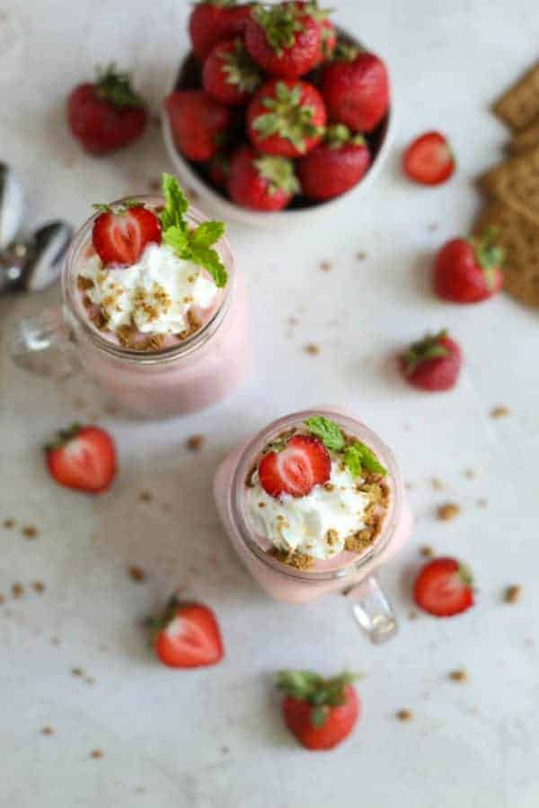

Ingredients
Directions
- Add yogurt, cottage cheese, strawberries, milk, flax meal and ice to a high-power blender. Blend until smooth.
- Stir graham cracker crumbs into smoothie, reserving a pinch of two to sprinkle on top. Pour into glasses, top with whipped cream, if desired and remaining graham cracker crumbs.
- To whip cream: Place ¼ cup heavy whipping cream in a small bowl. Whip with a hand mixer or by hand using a whisk until stiff peaks form.